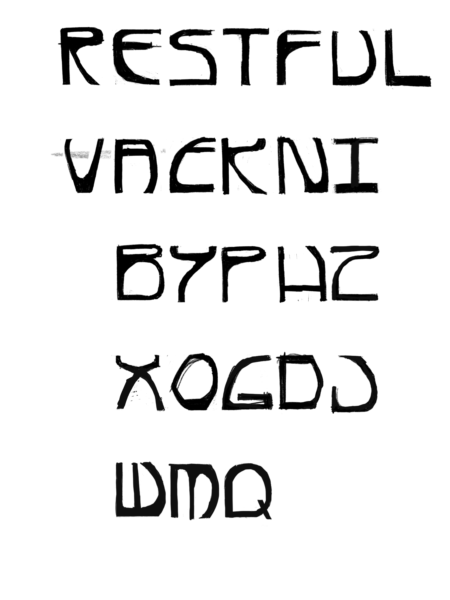
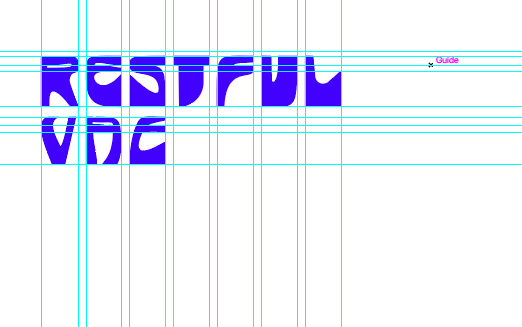

In Progress Typeface
Tools: Procreate, Adobe Illustrator
Over winter break, I've been working on a new sans serif typeface design. It started out with me sitting down to draw for fun one night and I ended up with 26 uppercase forms. Since then, I've been using Adobe Illustrator to create vector shapes of each sketch while reworking them.
Phase 1: Initial sketch:

Phase 2: Vector drawing so far:
Still working and reworking form and trying something new by creating a bolder type.
